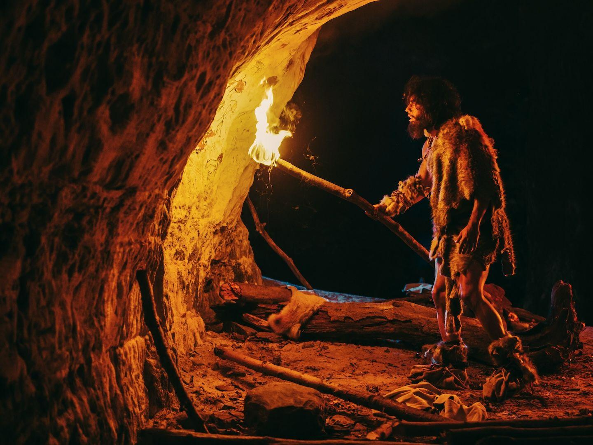
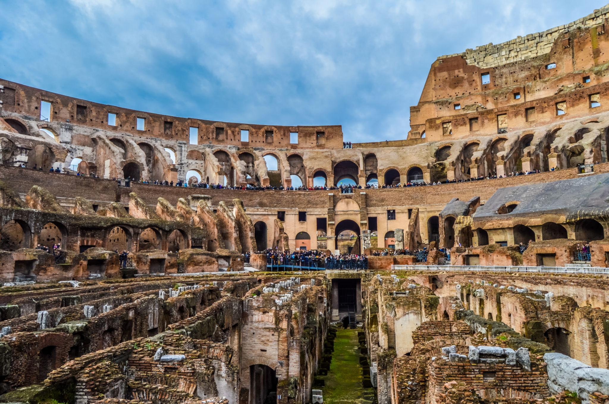
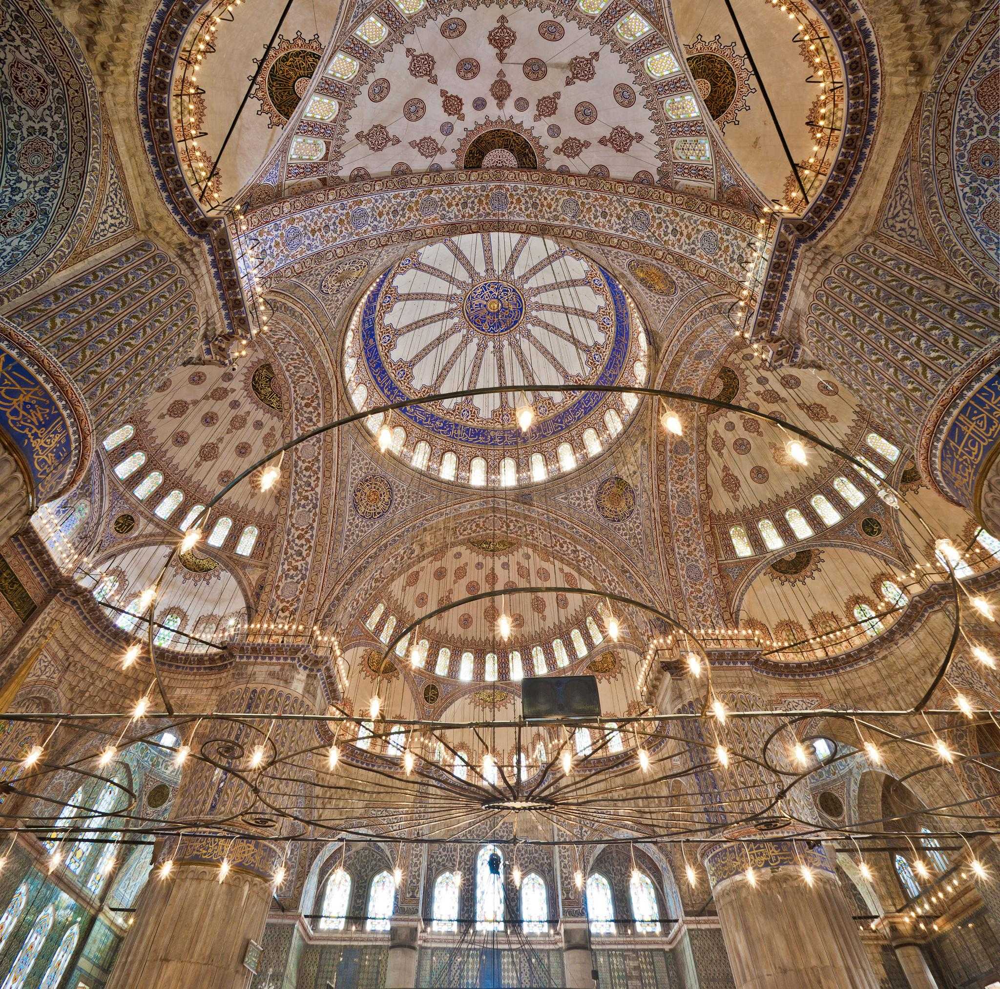
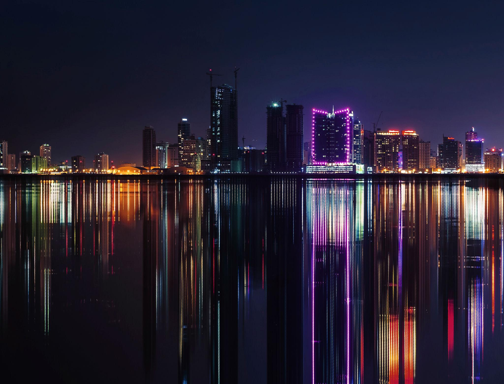

Stone Age Hall
Early human tools, cave paintings, and primitive life artifacts.
Navigate through different halls,
and civilizations inside the museum
Early human tools, cave paintings, and primitive life artifacts.
Pharaoh statues, mummies, and ancient Egyptian hieroglyphs.
Roman marble statues, architecture, and ancient empire relics.
Islamic patterns, Ottoman artwork, and Arabic calligraphy designs.
Artifacts showing industrial growth and modern historical development

Located in the west Wing, Ground Floor
Discover the earliest stages of human life, where survival,
creativity, and adaptation shaped the beginning of civilization
Primitive stone tools Cave paintings Early hunting equipment
Step into a prehistoric environment and explore how early humans lived,
hunted, and expressed themselves throu
Located in the East Wing, Ground Floor
Explore the fascinating world of ancient Egyptian civilization,
where history, mystery, and power come together in one place
Pharaoh statues Mummies and tomb artifacts Hieroglyphic inscriptions
Walk through dimly lit corridors and discover the secrets of one of the greatest civilizations in history

Located in the central Wing, frist Floor
Explore the grandeur of the Roman Empire, known for its remarkable architecture
powerful leadership, and lasting influence on art and law
Marble statues of emperors Architectural models and columns Ancient Roman coins and artifacts
Walk through a classical Roman setting surrounded by grand columns and sculptures, and
experience the strength and elegance of one of history’s greatest empires

Located in the East Wing, frist Floor
Discover the beauty of Ottoman civilization, where art, architecture,
and culture flourished through intricate designs and elegant craftsmanship
Islamic geometric patterns Ottoman ceramics and decorative tiles Arabic calligraphy and manuscripts
Immerse yourself in a richly decorated space filled with detailed patterns and warm lighting,
reflecting the artistic and cultural brilliance of the Ottoman era

Located in the Upper Level, North Wing
Explore the rapid development of modern society, where technology,
industry, and innovation reshaped the world and everyday life
Industrial revolution artifacts Early machines and inventions Multimedia historical displays
Experience the transformation of human life through interactive exhibits and modern displays,
showcasing the journey from past traditions to a fast-paced technological world